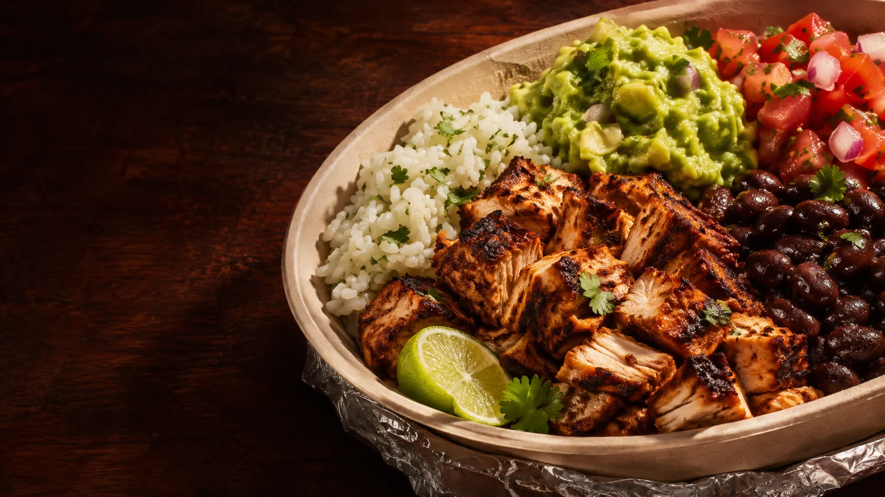

Guest action
“Get my usual.”
The guest chooses a favorite and a pickup location.

A digital strategy for Chipotle
At the counter, a crew member can handle a change in a few words. I’d give guests that same freedom in the app or through their own AI assistant, with one basket that follows them to pickup.
Guest experience
Chipotle offered voice reordering back in 2019. I’d build on that by letting a guest edit a favorite, switch restaurants, and check exactly what the crew will make. Try the same order from six starting points. [3]
Company capabilities
I’d fund shared ordering services before adding another front end. Explore the decisions every channel has to get right, from permission to open a favorite to the moment a ticket reaches the line.
Guest action
The guest chooses a favorite and a pickup location.
Chipotle service
Check the signed-in account and the permission granted to this channel. Return the selected bowl and eligible rewards.
Guest or crew outcome
The guest can change the bowl, decline personalization, or build an order from scratch.
Personal assistants
I’d give a guest’s assistant a small set of tools through the Model Context Protocol (MCP). It could read a store’s menu and draft a basket. Access to a saved meal would require the guest’s permission, which they could revoke.
Chipotle would own the quote, Rewards rules, and checkout. The guest would confirm the restaurant, pickup time, and total on a Chipotle review card inside a compatible assistant, or through a secure checkout link. A retry would return the same order reference. [4]
Design operations
Suppose guests leave after changing pickup locations. Here’s how I’d give researchers, designers, product managers, and engineers the tools to find the cause and test a fix with a restaurant crew.
Research & analytics
Let teams ask questions in plain language. A data assistant translates them into read-only queries over approved, aggregated order events in the warehouse. An analyst checks the query, the eligible sessions, and the missing events. Pair the pattern with guest interviews before calling it a cause.
Guest outcome Surface an unavailable ingredient while the guest can still change it.
“Compare checkout exits when a guest changes pickup restaurants during a repeat order.”
Of 1,000 sessions in each group, 80 and 180 ended before checkout.
AI-assisted development
Connect the coding assistant to the same versioned components the app ships. Give it the spacing and color tokens, voice and chat patterns, accessibility rules, and a sample menu. A designer or product manager can generate two working concepts from one brief. Engineering reviews the code.
Guest outcome The same ingredient change is legible on screen, spoken clearly, and reflected in the total.
Try the guest version“Show two ways to explain a sold-out ingredient when a guest switches stores.”
Both concepts use the same ingredient data. Test which one guests notice and understand before they pay.
Guest & crew research
Have guests change stores and explain what they expect to receive. Include people using voice and screen readers. Hand the matching ticket to a crew member during a lunch-rush simulation. Watch where either person has to guess.
Guest outcome The order the guest thinks they confirmed matches the meal the crew knows to make.
Design systems & product operations
Design and Engineering approve the component, interaction copy, and tests together. Publish the change to the design library and the context that coding agents read. Product-line managers schedule adoption and use the same event definitions to measure it.
Guest outcome A fix proven in the app can reach web, voice, text, and chat without making the guest learn a different rule.
Proposed 90-day pilot
I’d fund one team from Design, Product, Engineering, Data, and Restaurant Operations to test with signed-in app guests who have a favorite pickup order. A correct meal, ready when promised, earns the next investment.
Days 1–30
Trace repeat orders from first tap to pickup at peak and quieter times. Pair crew observations with exit data. If the biggest failure is a late handoff, spend the first round there.
Days 31–60
Randomly assign eligible guests to today’s reorder or the editable version. Keep the price and offers comparable. Audit sampled tickets against bags and record promised and actual ready times.
Days 61–90
Expand to web if the result holds at lunch rush and the extra orders cover their cost. Extend to chat, voice, and text next. Open a limited assistant pilot once permissions, payment, and retries pass restaurant tests.
Primary measure
Correct, on-time pickupsAgree on a meaningful lift and guardrail limits with Operations before launch. Compare remakes, refunds, peak wait, and margin per eligible guest with the control. Pause for duplicate charges or wrong tickets. Check 30-day repeat before a wider rollout.